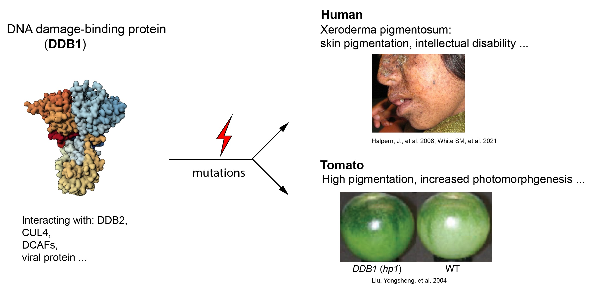

DDB1 is a functionally conserved protein that plays an important role in DNA damage repair
{kind=link}
DNA damage-binding protein 1 is an essential protein for the nucleotide excision repair (NER) pathway across multiple kingdoms, from yeast to plants and humans. It is a component of the DDB1-DDB2 complex, which repairs UV-damaged DNA, and the DDB1_CUL4 complex, which acts as an E3 ligase to promote ubiquitination of substrate proteins. Intriguingly, biallelic mutations in DDB1 in both humans and the plant species tomato lead to increased photo (UV) response and increased pigmentation. Thus, investigating the underlying molecular mechanisms could potentially benefit agriculture and human health in unexpected ways.
De novo screening of the physical interaction partners of DDB1

Using a molecular biological technique, namely the yeast-two-hybrid, we performed de novo screening for the interaction partners of DDB1 in model species: tomato. Unexpectedly, multiple epigenetic factors, rather than factors from canonical DNA repair pathways, were identified, including methyl-DNA binding domain protein (MBD5) (Ref.1), heterochromatin protein (HP1) (Ref.2), and histone-lysine-N-methyltransferase (SUVH3-9) (Ref.3). Using molecular tools, such as co-immunoprecipitation and GST pulldown, we meticulously validated the interaction between DDB1 and these epigenetic factors. We further used biochemical assays and molecular genetics to investigate their molecular and phenotypic functions. Taken together, our studies contribute to the intriguing link between DNA damage and epigenetic modification and nominate epigenetic pathways for their important role in fruit development.